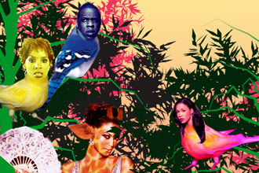
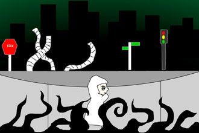
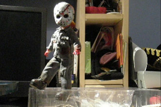
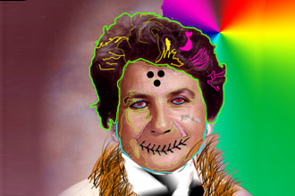
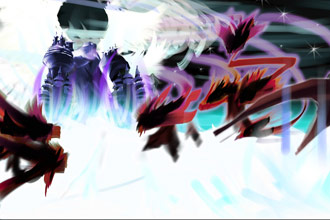

Juried
Student Exhibition Spring 07

Anita
Nixon. Destiny’s Menagerie. digital image |

Jason
To. Dream Type I. Flash animation |

Ken
Gutierrrez and Diego Palacios. Hunted. video |

Sean
Colon. Nightmare Doll. stop-motion animation |

David
Alves. Untitled. digital print |

William
Lai. Untitled. digital print |
April 18 - May
7, 2006
reception Tuesday April 24, 5-7 pm
163 William Street, New York, NY. Hours: Wed - Fri 12am -6pm
with Peter Fingesten Gallery, 1 Pace Plaza, Level B
works in print
by:
Daniella
Adams • Anna Cho • Jason Heleva • Miao Jun Kuang • William
Lai • Mathew Meier • Anita Nixon • Victoria Picciano
Gabrielle Ruiz • Thomas Sciro
works in Flash
by:
Madj Farah • Jonathan Peterson • Jason To
works in video
by:
Sean Colon •
Jennifer Gilberto
• Joe Glover • Ken
Gutierrrez and Diego Palacios • Janet
Li •
Matt Lynch • Chris Napolitano
Shervin
Nassi
•
Katherine Panar and Wilson Almario •
Dominique Sacco • Queenett
Williams